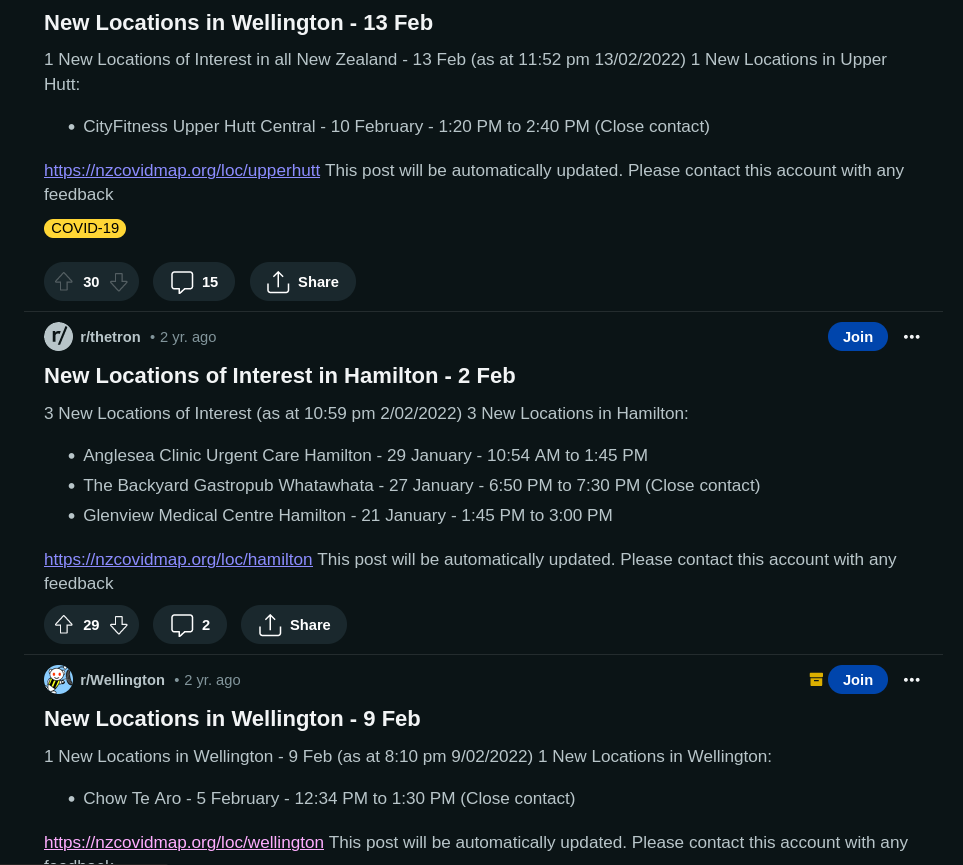

(As a Kiwi, this level of self-promotion makes me deeply uncomfortable, but here we go...)
Developing in a professional capacity as a full stack developer for over 10 years.
Extensive experience in implementing complex software solutions, based on varying degrees of specification.
Working closely with stakeholders, refining and architecting solutions through to deployment, maintenance and support.
I am passionate about solving real problems, working with the best tools (or getting there) and improving the overall effectiveness of the organisation and the team
I am excited about continuing to explore the benefits and opportunities of serverless/cloud solutions (in the right places)
Over the course of the pandemic, the NZCovidMap reached over 200,000 Kiwis across New Zealand, with a peak of 15,000 daily unique visitors. This tool provided people with a mobile-friendly view of Covid-19 Locations of Interest published by the NZ Ministry of Health.
- - Circle-based location selection method
- A Mobile-friendly map view for digesting localized information
- - Location specific url pathing query params + "share link to location"
- - Generation of location-specific meta screenshots for engaging social media preview images.
- Reddit Integration - Auto-Generate a "Location of Interest summary" for each subreddit & share relevant subreddit
Each hour, the application would check for new locations in specific communities and (if a sub-reddit exists) posts for any new locations in a standard post format.
- Provide a Mobile-friendly view of Locations of Interest
- Raise awareness of Locations of Interests in our community.
- Lower anxiety for those seeking updates about their community.
Tech
- Up-to-date social Media sharing icons created for each town/city
- An n8n workflow that reads the CSV file published by the MoH. Locations are then categorized and saved.
- An n8n workflow endpoint that returns all the locations in the last 30 days.
- A statically rendered Next.JS site that is published each hour. A mobile-friendly interactive map with all locations marked.
- A hourly job to build sub-reddit content and sent updates to places with new/updated Locations of Interest.
Why so complex?
To reduce the complexity, cost and on-going maintenance cost of the application, we removed the n8n workflow the Next.JS site build on and replaced it with direct calls to the MoH API.
This allowed the site to be fully independent of my own local infrastructure and for its whole lifetime, run entirely for free on Vercel
I caption a Sunday league team recently promoted to the top division and the Wednesday indoor football team i started recently when 23 games unbeaten (as at 26/9/21) in their third season in the competition.
I play as much as injuries allow 🤕